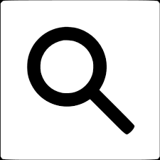
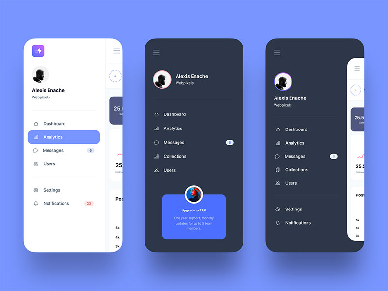

Oryginalna treść i tłumaczenie
EN: Users should not have to wonder whether different words, situations, or actions mean the same thing.
PL: Użytkownicy nie powinni zastanawiać się, czy różne słowa, sytuacje lub działania oznaczają to samo.
Przykład ze strony internetowej

Źródło: IconsDB – Google web search icon
Przykład z aplikacji mobilnej

Źródło: WPDean – hamburger menu in UI design